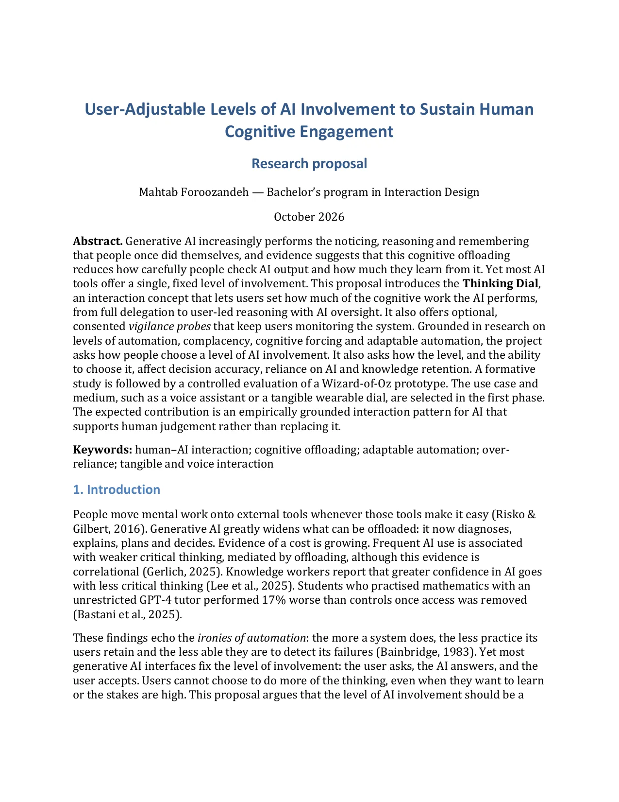
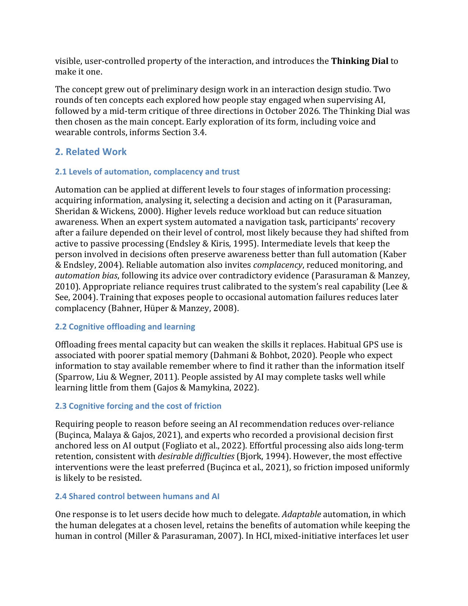
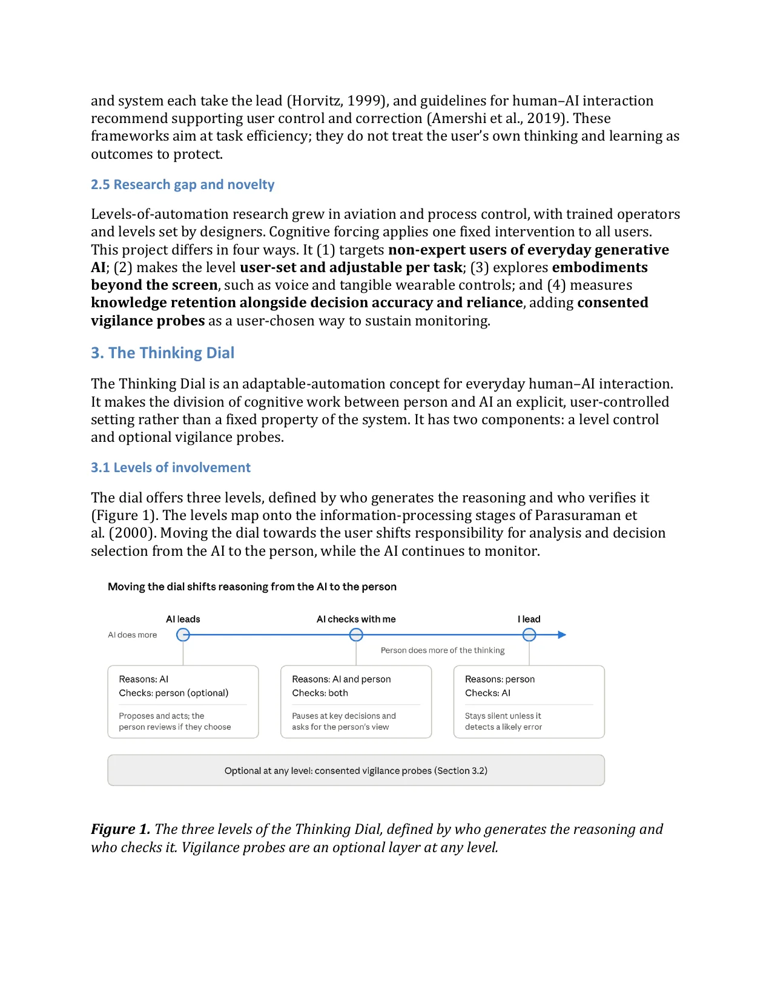
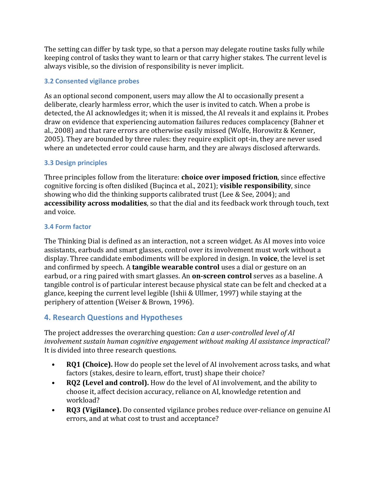
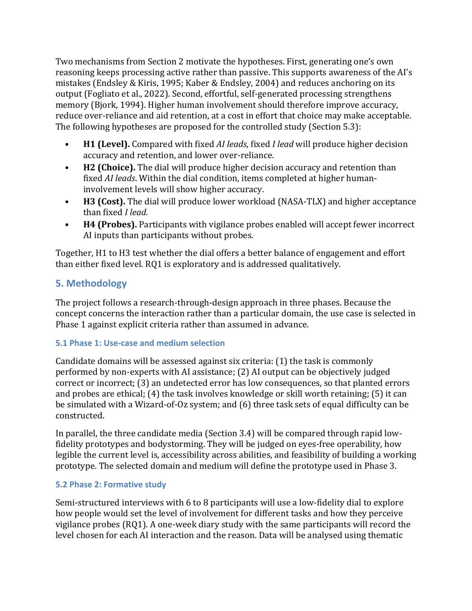
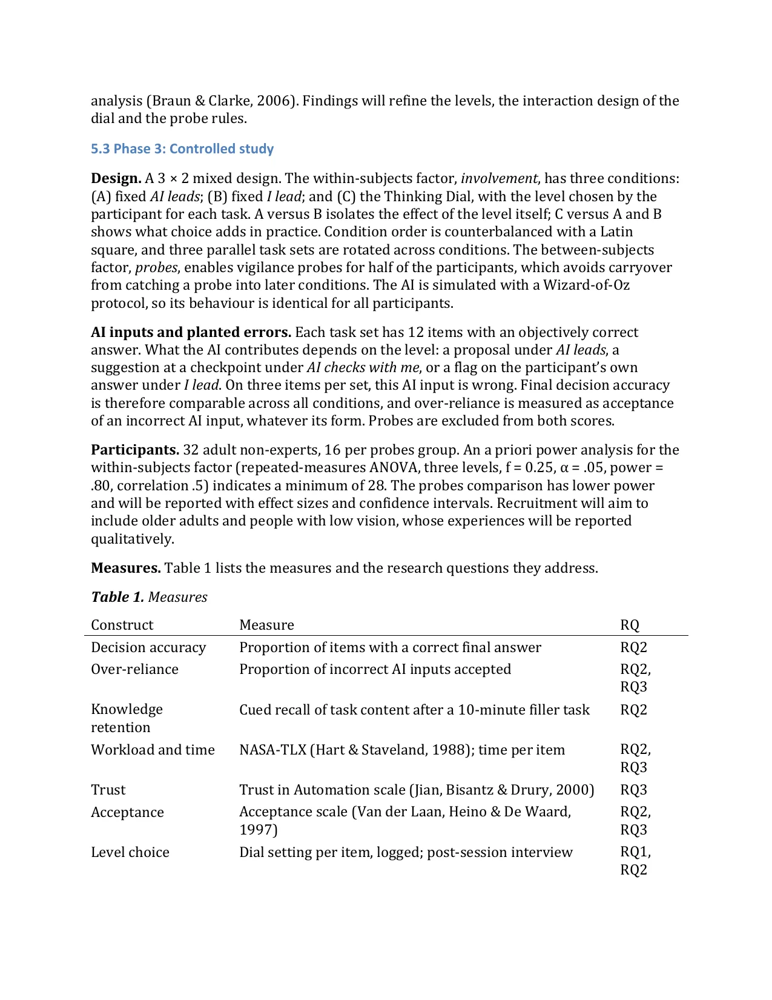
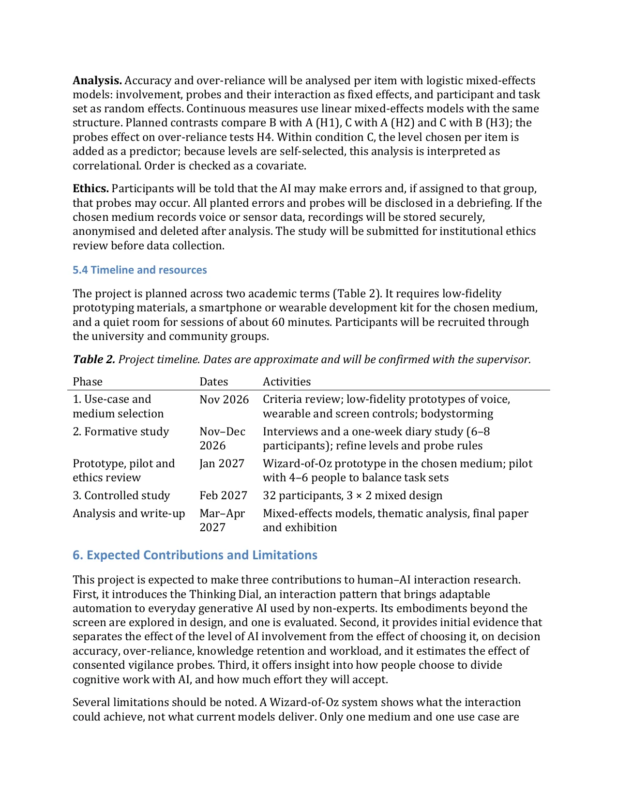
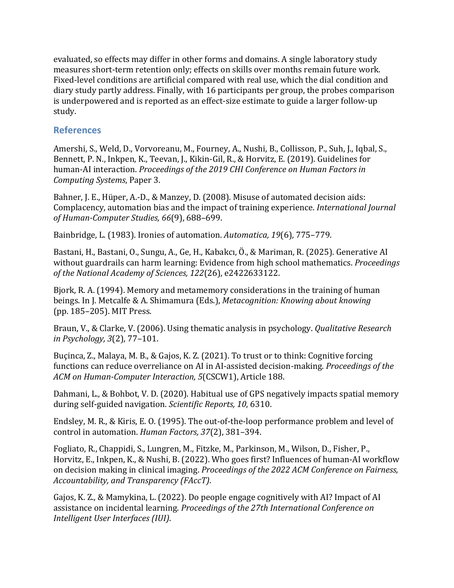
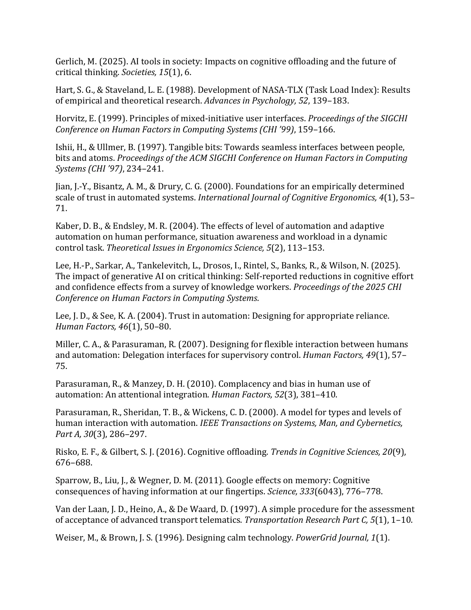

User-Adjustable Levels of AI Involvement to Sustain Human Cognitive Engagement Research proposal Mahtab Foroozandeh — Bachelor’s program in Interaction Design October 2026 Abstract. Generative AI increasingly performs the noticing, reasoning and remembering that people once did themselves, and evidence suggests that this cognitive offloading reduces how carefully people check AI output and how much they learn from it. Yet most AI tools offer a single, fixed level of involvement. This proposal introduces the Thinking Dial, an interaction concept that lets users set how much of the cognitive work the AI performs, from full delegation to user-led reasoning with AI oversight. It also offers optional, consented vigilance probes that keep users monitoring the system. Grounded in research on levels of automation, complacency, cognitive forcing and adaptable automation, the project asks how people choose a level of AI involvement. It also asks how the level, and the ability to choose it, affect decision accuracy, reliance on AI and knowledge retention. A formative study is followed by a controlled evaluation of a Wizard-of-Oz prototype. The use case and medium, such as a voice assistant or a tangible wearable dial, are selected in the first phase. The expected contribution is an empirically grounded interaction pattern for AI that supports human judgement rather than replacing it. Keywords: human–AI interaction; cognitive offloading; adaptable automation; over- reliance; tangible and voice interaction 1. Introduction People move mental work onto external tools whenever those tools make it easy (Risko & Gilbert, 2016). Generative AI greatly widens what can be offloaded: it now diagnoses, explains, plans and decides. Evidence of a cost is growing. Frequent AI use is associated with weaker critical thinking, mediated by offloading, although this evidence is correlational (Gerlich, 2025). Knowledge workers report that greater confidence in AI goes with less critical thinking (Lee et al., 2025). Students who practised mathematics with an unrestricted GPT-4 tutor performed 17% worse than controls once access was removed (Bastani et al., 2025). These findings echo the ironies of automation: the more a system does, the less practice its users retain and the less able they are to detect its failures (Bainbridge, 1983). Yet most generative AI interfaces fix the level of involvement: the user asks, the AI answers, and the user accepts. Users cannot choose to do more of the thinking, even when they want to learn or the stakes are high. This proposal argues that the level of AI involvement should be a

visible, user-controlled property of the interaction, and introduces the Thinking Dial to make it one. The concept grew out of preliminary design work in an interaction design studio. Two rounds of ten concepts each explored how people stay engaged when supervising AI, followed by a mid-term critique of three directions in October 2026. The Thinking Dial was then chosen as the main concept. Early exploration of its form, including voice and wearable controls, informs Section 3.4. 2. Related Work 2.1 Levels of automation, complacency and trust Automation can be applied at different levels to four stages of information processing: acquiring information, analysing it, selecting a decision and acting on it (Parasuraman, Sheridan & Wickens, 2000). Higher levels reduce workload but can reduce situation awareness. When an expert system automated a navigation task, participants’ recovery after a failure depended on their level of control, most likely because they had shifted from active to passive processing (Endsley & Kiris, 1995). Intermediate levels that keep the person involved in decisions often preserve awareness better than full automation (Kaber & Endsley, 2004). Reliable automation also invites complacency, reduced monitoring, and automation bias, following its advice over contradictory evidence (Parasuraman & Manzey, 2010). Appropriate reliance requires trust calibrated to the system’s real capability (Lee & See, 2004). Training that exposes people to occasional automation failures reduces later complacency (Bahner, Hüper & Manzey, 2008). 2.2 Cognitive offloading and learning Offloading frees mental capacity but can weaken the skills it replaces. Habitual GPS use is associated with poorer spatial memory (Dahmani & Bohbot, 2020). People who expect information to stay available remember where to find it rather than the information itself (Sparrow, Liu & Wegner, 2011). People assisted by AI may complete tasks well while learning little from them (Gajos & Mamykina, 2022). 2.3 Cognitive forcing and the cost of friction Requiring people to reason before seeing an AI recommendation reduces over-reliance (Buçinca, Malaya & Gajos, 2021), and experts who recorded a provisional decision first anchored less on AI output (Fogliato et al., 2022). Effortful processing also aids long-term retention, consistent with desirable difficulties (Bjork, 1994). However, the most effective interventions were the least preferred (Buçinca et al., 2021), so friction imposed uniformly is likely to be resisted. 2.4 Shared control between humans and AI One response is to let users decide how much to delegate. Adaptable automation, in which the human delegates at a chosen level, retains the benefits of automation while keeping the human in control (Miller & Parasuraman, 2007). In HCI, mixed-initiative interfaces let user

and system each take the lead (Horvitz, 1999), and guidelines for human–AI interaction recommend supporting user control and correction (Amershi et al., 2019). These frameworks aim at task efficiency; they do not treat the user’s own thinking and learning as outcomes to protect. 2.5 Research gap and novelty Levels-of-automation research grew in aviation and process control, with trained operators and levels set by designers. Cognitive forcing applies one fixed intervention to all users. This project differs in four ways. It (1) targets non-expert users of everyday generative AI; (2) makes the level user-set and adjustable per task; (3) explores embodiments beyond the screen, such as voice and tangible wearable controls; and (4) measures knowledge retention alongside decision accuracy and reliance, adding consented vigilance probes as a user-chosen way to sustain monitoring. 3. The Thinking Dial The Thinking Dial is an adaptable-automation concept for everyday human–AI interaction. It makes the division of cognitive work between person and AI an explicit, user-controlled setting rather than a fixed property of the system. It has two components: a level control and optional vigilance probes. 3.1 Levels of involvement The dial offers three levels, defined by who generates the reasoning and who verifies it (Figure 1). The levels map onto the information-processing stages of Parasuraman et al. (2000). Moving the dial towards the user shifts responsibility for analysis and decision selection from the AI to the person, while the AI continues to monitor. Figure 1. The three levels of the Thinking Dial, defined by who generates the reasoning and who checks it. Vigilance probes are an optional layer at any level.

The setting can differ by task type, so that a person may delegate routine tasks fully while keeping control of tasks they want to learn or that carry higher stakes. The current level is always visible, so the division of responsibility is never implicit. 3.2 Consented vigilance probes As an optional second component, users may allow the AI to occasionally present a deliberate, clearly harmless error, which the user is invited to catch. When a probe is detected, the AI acknowledges it; when it is missed, the AI reveals it and explains it. Probes draw on evidence that experiencing automation failures reduces complacency (Bahner et al., 2008) and that rare errors are otherwise easily missed (Wolfe, Horowitz & Kenner, 2005). They are bounded by three rules: they require explicit opt-in, they are never used where an undetected error could cause harm, and they are always disclosed afterwards. 3.3 Design principles Three principles follow from the literature: choice over imposed friction, since effective cognitive forcing is often disliked (Buçinca et al., 2021); visible responsibility, since showing who did the thinking supports calibrated trust (Lee & See, 2004); and accessibility across modalities, so that the dial and its feedback work through touch, text and voice. 3.4 Form factor The Thinking Dial is defined as an interaction, not a screen widget. As AI moves into voice assistants, earbuds and smart glasses, control over its involvement must work without a display. Three candidate embodiments will be explored in design. In voice, the level is set and confirmed by speech. A tangible wearable control uses a dial or gesture on an earbud, or a ring paired with smart glasses. An on-screen control serves as a baseline. A tangible control is of particular interest because physical state can be felt and checked at a glance, keeping the current level legible (Ishii & Ullmer, 1997) while staying at the periphery of attention (Weiser & Brown, 1996). 4. Research Questions and Hypotheses The project addresses the overarching question: Can a user-controlled level of AI involvement sustain human cognitive engagement without making AI assistance impractical? It is divided into three research questions. • RQ1 (Choice). How do people set the level of AI involvement across tasks, and what factors (stakes, desire to learn, effort, trust) shape their choice? • RQ2 (Level and control). How do the level of AI involvement, and the ability to choose it, affect decision accuracy, reliance on AI, knowledge retention and workload? • RQ3 (Vigilance). Do consented vigilance probes reduce over-reliance on genuine AI errors, and at what cost to trust and acceptance?

Two mechanisms from Section 2 motivate the hypotheses. First, generating one’s own reasoning keeps processing active rather than passive. This supports awareness of the AI’s mistakes (Endsley & Kiris, 1995; Kaber & Endsley, 2004) and reduces anchoring on its output (Fogliato et al., 2022). Second, effortful, self-generated processing strengthens memory (Bjork, 1994). Higher human involvement should therefore improve accuracy, reduce over-reliance and aid retention, at a cost in effort that choice may make acceptable. The following hypotheses are proposed for the controlled study (Section 5.3): • H1 (Level). Compared with fixed AI leads, fixed I lead will produce higher decision accuracy and retention, and lower over-reliance. • H2 (Choice). The dial will produce higher decision accuracy and retention than fixed AI leads. Within the dial condition, items completed at higher human- involvement levels will show higher accuracy. • H3 (Cost). The dial will produce lower workload (NASA-TLX) and higher acceptance than fixed I lead. • H4 (Probes). Participants with vigilance probes enabled will accept fewer incorrect AI inputs than participants without probes. Together, H1 to H3 test whether the dial offers a better balance of engagement and effort than either fixed level. RQ1 is exploratory and is addressed qualitatively. 5. Methodology The project follows a research-through-design approach in three phases. Because the concept concerns the interaction rather than a particular domain, the use case is selected in Phase 1 against explicit criteria rather than assumed in advance. 5.1 Phase 1: Use-case and medium selection Candidate domains will be assessed against six criteria: (1) the task is commonly performed by non-experts with AI assistance; (2) AI output can be objectively judged correct or incorrect; (3) an undetected error has low consequences, so that planted errors and probes are ethical; (4) the task involves knowledge or skill worth retaining; (5) it can be simulated with a Wizard-of-Oz system; and (6) three task sets of equal difficulty can be constructed. In parallel, the three candidate media (Section 3.4) will be compared through rapid low- fidelity prototypes and bodystorming. They will be judged on eyes-free operability, how legible the current level is, accessibility across abilities, and feasibility of building a working prototype. The selected domain and medium will define the prototype used in Phase 3. 5.2 Phase 2: Formative study Semi-structured interviews with 6 to 8 participants will use a low-fidelity dial to explore how people would set the level of involvement for different tasks and how they perceive vigilance probes (RQ1). A one-week diary study with the same participants will record the level chosen for each AI interaction and the reason. Data will be analysed using thematic

analysis (Braun & Clarke, 2006). Findings will refine the levels, the interaction design of the dial and the probe rules. 5.3 Phase 3: Controlled study Design. A 3 × 2 mixed design. The within-subjects factor, involvement, has three conditions: (A) fixed AI leads; (B) fixed I lead; and (C) the Thinking Dial, with the level chosen by the participant for each task. A versus B isolates the effect of the level itself; C versus A and B shows what choice adds in practice. Condition order is counterbalanced with a Latin square, and three parallel task sets are rotated across conditions. The between-subjects factor, probes, enables vigilance probes for half of the participants, which avoids carryover from catching a probe into later conditions. The AI is simulated with a Wizard-of-Oz protocol, so its behaviour is identical for all participants. AI inputs and planted errors. Each task set has 12 items with an objectively correct answer. What the AI contributes depends on the level: a proposal under AI leads, a suggestion at a checkpoint under AI checks with me, or a flag on the participant’s own answer under I lead. On three items per set, this AI input is wrong. Final decision accuracy is therefore comparable across all conditions, and over-reliance is measured as acceptance of an incorrect AI input, whatever its form. Probes are excluded from both scores. Participants. 32 adult non-experts, 16 per probes group. An a priori power analysis for the within-subjects factor (repeated-measures ANOVA, three levels, f = 0.25, α = .05, power = .80, correlation .5) indicates a minimum of 28. The probes comparison has lower power and will be reported with effect sizes and confidence intervals. Recruitment will aim to include older adults and people with low vision, whose experiences will be reported qualitatively. Measures. Table 1 lists the measures and the research questions they address. Table 1. Measures Construct Measure RQ Decision accuracy Proportion of items with a correct final answer RQ2 Over-reliance Proportion of incorrect AI inputs accepted RQ2, RQ3 Knowledge Cued recall of task content after a 10-minute filler task RQ2 retention Workload and time NASA-TLX (Hart & Staveland, 1988); time per item RQ2, RQ3 Trust Trust in Automation scale (Jian, Bisantz & Drury, 2000) RQ3 Acceptance Acceptance scale (Van der Laan, Heino & De Waard, RQ2, 1997) RQ3 Level choice Dial setting per item, logged; post-session interview RQ1, RQ2

Analysis. Accuracy and over-reliance will be analysed per item with logistic mixed-effects models: involvement, probes and their interaction as fixed effects, and participant and task set as random effects. Continuous measures use linear mixed-effects models with the same structure. Planned contrasts compare B with A (H1), C with A (H2) and C with B (H3); the probes effect on over-reliance tests H4. Within condition C, the level chosen per item is added as a predictor; because levels are self-selected, this analysis is interpreted as correlational. Order is checked as a covariate. Ethics. Participants will be told that the AI may make errors and, if assigned to that group, that probes may occur. All planted errors and probes will be disclosed in a debriefing. If the chosen medium records voice or sensor data, recordings will be stored securely, anonymised and deleted after analysis. The study will be submitted for institutional ethics review before data collection. 5.4 Timeline and resources The project is planned across two academic terms (Table 2). It requires low-fidelity prototyping materials, a smartphone or wearable development kit for the chosen medium, and a quiet room for sessions of about 60 minutes. Participants will be recruited through the university and community groups. Table 2. Project timeline. Dates are approximate and will be confirmed with the supervisor. Phase Dates Activities 1. Use-case and Nov 2026 Criteria review; low-fidelity prototypes of voice, medium selection wearable and screen controls; bodystorming 2. Formative study Nov–Dec Interviews and a one-week diary study (6–8 2026 participants); refine levels and probe rules Prototype, pilot and Jan 2027 Wizard-of-Oz prototype in the chosen medium; pilot ethics review with 4–6 people to balance task sets 3. Controlled study Feb 2027 32 participants, 3 × 2 mixed design Analysis and write-up Mar–Apr Mixed-effects models, thematic analysis, final paper 2027 and exhibition 6. Expected Contributions and Limitations This project is expected to make three contributions to human–AI interaction research. First, it introduces the Thinking Dial, an interaction pattern that brings adaptable automation to everyday generative AI used by non-experts. Its embodiments beyond the screen are explored in design, and one is evaluated. Second, it provides initial evidence that separates the effect of the level of AI involvement from the effect of choosing it, on decision accuracy, over-reliance, knowledge retention and workload, and it estimates the effect of consented vigilance probes. Third, it offers insight into how people choose to divide cognitive work with AI, and how much effort they will accept. Several limitations should be noted. A Wizard-of-Oz system shows what the interaction could achieve, not what current models deliver. Only one medium and one use case are

evaluated, so effects may differ in other forms and domains. A single laboratory study measures short-term retention only; effects on skills over months remain future work. Fixed-level conditions are artificial compared with real use, which the dial condition and diary study partly address. Finally, with 16 participants per group, the probes comparison is underpowered and is reported as an effect-size estimate to guide a larger follow-up study. References Amershi, S., Weld, D., Vorvoreanu, M., Fourney, A., Nushi, B., Collisson, P., Suh, J., Iqbal, S., Bennett, P. N., Inkpen, K., Teevan, J., Kikin-Gil, R., & Horvitz, E. (2019). Guidelines for human-AI interaction. Proceedings of the 2019 CHI Conference on Human Factors in Computing Systems, Paper 3. Bahner, J. E., Hüper, A.-D., & Manzey, D. (2008). Misuse of automated decision aids: Complacency, automation bias and the impact of training experience. International Journal of Human-Computer Studies, 66(9), 688–699. Bainbridge, L. (1983). Ironies of automation. Automatica, 19(6), 775–779. Bastani, H., Bastani, O., Sungu, A., Ge, H., Kabakcı, Ö., & Mariman, R. (2025). Generative AI without guardrails can harm learning: Evidence from high school mathematics. Proceedings of the National Academy of Sciences, 122(26), e2422633122. Bjork, R. A. (1994). Memory and metamemory considerations in the training of human beings. In J. Metcalfe & A. Shimamura (Eds.), Metacognition: Knowing about knowing (pp. 185–205). MIT Press. Braun, V., & Clarke, V. (2006). Using thematic analysis in psychology. Qualitative Research in Psychology, 3(2), 77–101. Buçinca, Z., Malaya, M. B., & Gajos, K. Z. (2021). To trust or to think: Cognitive forcing functions can reduce overreliance on AI in AI-assisted decision-making. Proceedings of the ACM on Human-Computer Interaction, 5(CSCW1), Article 188. Dahmani, L., & Bohbot, V. D. (2020). Habitual use of GPS negatively impacts spatial memory during self-guided navigation. Scientific Reports, 10, 6310. Endsley, M. R., & Kiris, E. O. (1995). The out-of-the-loop performance problem and level of control in automation. Human Factors, 37(2), 381–394. Fogliato, R., Chappidi, S., Lungren, M., Fitzke, M., Parkinson, M., Wilson, D., Fisher, P., Horvitz, E., Inkpen, K., & Nushi, B. (2022). Who goes first? Influences of human-AI workflow on decision making in clinical imaging. Proceedings of the 2022 ACM Conference on Fairness, Accountability, and Transparency (FAccT). Gajos, K. Z., & Mamykina, L. (2022). Do people engage cognitively with AI? Impact of AI assistance on incidental learning. Proceedings of the 27th International Conference on Intelligent User Interfaces (IUI).

Gerlich, M. (2025). AI tools in society: Impacts on cognitive offloading and the future of critical thinking. Societies, 15(1), 6. Hart, S. G., & Staveland, L. E. (1988). Development of NASA-TLX (Task Load Index): Results of empirical and theoretical research. Advances in Psychology, 52, 139–183. Horvitz, E. (1999). Principles of mixed-initiative user interfaces. Proceedings of the SIGCHI Conference on Human Factors in Computing Systems (CHI ’99), 159–166. Ishii, H., & Ullmer, B. (1997). Tangible bits: Towards seamless interfaces between people, bits and atoms. Proceedings of the ACM SIGCHI Conference on Human Factors in Computing Systems (CHI ’97), 234–241. Jian, J.-Y., Bisantz, A. M., & Drury, C. G. (2000). Foundations for an empirically determined scale of trust in automated systems. International Journal of Cognitive Ergonomics, 4(1), 53– 71. Kaber, D. B., & Endsley, M. R. (2004). The effects of level of automation and adaptive automation on human performance, situation awareness and workload in a dynamic control task. Theoretical Issues in Ergonomics Science, 5(2), 113–153. Lee, H.-P., Sarkar, A., Tankelevitch, L., Drosos, I., Rintel, S., Banks, R., & Wilson, N. (2025). The impact of generative AI on critical thinking: Self-reported reductions in cognitive effort and confidence effects from a survey of knowledge workers. Proceedings of the 2025 CHI Conference on Human Factors in Computing Systems. Lee, J. D., & See, K. A. (2004). Trust in automation: Designing for appropriate reliance. Human Factors, 46(1), 50–80. Miller, C. A., & Parasuraman, R. (2007). Designing for flexible interaction between humans and automation: Delegation interfaces for supervisory control. Human Factors, 49(1), 57– 75. Parasuraman, R., & Manzey, D. H. (2010). Complacency and bias in human use of automation: An attentional integration. Human Factors, 52(3), 381–410. Parasuraman, R., Sheridan, T. B., & Wickens, C. D. (2000). A model for types and levels of human interaction with automation. IEEE Transactions on Systems, Man, and Cybernetics, Part A, 30(3), 286–297. Risko, E. F., & Gilbert, S. J. (2016). Cognitive offloading. Trends in Cognitive Sciences, 20(9), 676–688. Sparrow, B., Liu, J., & Wegner, D. M. (2011). Google effects on memory: Cognitive consequences of having information at our fingertips. Science, 333(6043), 776–778. Van der Laan, J. D., Heino, A., & De Waard, D. (1997). A simple procedure for the assessment of acceptance of advanced transport telematics. Transportation Research Part C, 5(1), 1–10. Weiser, M., & Brown, J. S. (1996). Designing calm technology. PowerGrid Journal, 1(1).
Wolfe, J. M., Horowitz, T. S., & Kenner, N. M. (2005). Rare items often missed in visual searches. Nature, 435, 439–440.